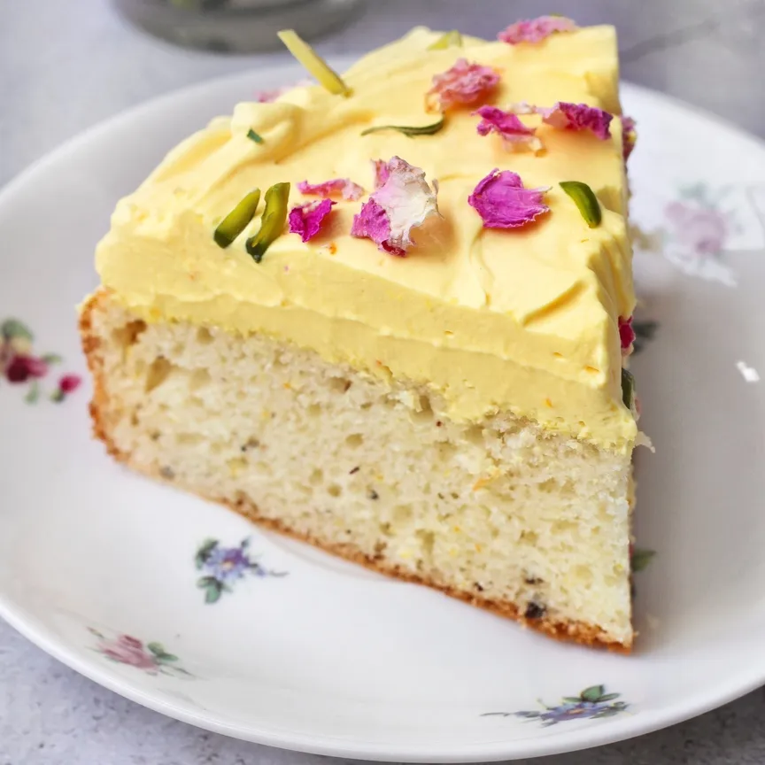

Cornish Pasties

The Cornish pasty is a traditional pastry from Cornwall. It is filled with beef, potatoes, turnip (swede), and onions. The pasty is crimped along one side and baked to golden perfection!
Click here for a delicious recipe!
Saffron Cake
Saffron cake is a traditional Cornish treat made with saffron, mixed dried fruit, and currants. It is a unique and delicious cake with a distinctive yellow color.
Click here for a delicious recipe!
Clotted Cream
Cornish clotted cream is a thick, rich cream made by slowly heating unpasteurized cow's milk. It has a high fat content and a lovely golden crust, making it perfect for spreading on scones.
Click here for a delicious recipe!
Stargazy Pie

Stargazy pie is a traditional Cornish dish made with pilchards, eggs, and potatoes, covered with a pastry crust. The heads of the fish poke through the crust, looking up at the sky!
Click here for a delicious recipe!